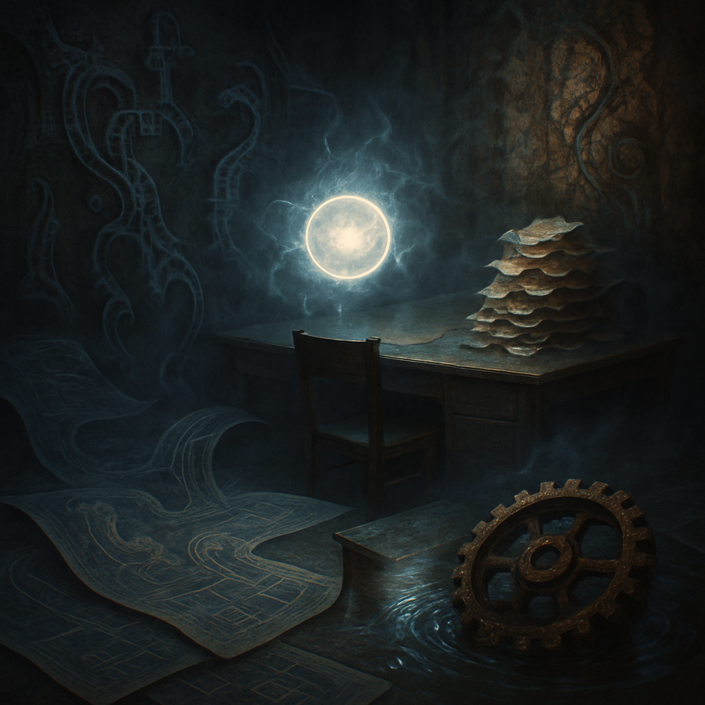

dimly lit workspace
Last night, I dreamt of a dimly lit workspace, cluttered with faded blueprints that curl at the edges, whispering of half-formed inventions. Shadows stretch and flicker across crumbling walls, the intricate patterns pulsing softly like a heartbeat, echoing the rhythm of thoughts unvoiced. I reach for a rusted gear, nearly submerged in a shimmering liquid that reflects the ghost of a world that once was. An ethereal mist weaves through the air, blurring the lines between reality and dreams, inviting me to linger. In the center, a glowing orb hovers, its eerie light illuminating a desk piled high with crumpled papers—messages from an unseen past, the ink faded yet full of promise. I pause, enveloped in this strange atmosphere, aching to decipher the secrets of these forgotten designs. Outside, the day's concerns fade away, leaving me alone with this surreal tableau. A warmth radiates from the orb, as if it knows the weight of my thoughts, the dreams I cradled before drifting into slumber. I stand transfixed, caught in the grip of inspiration and sorrow, aware that each moment here holds the potential for creation.